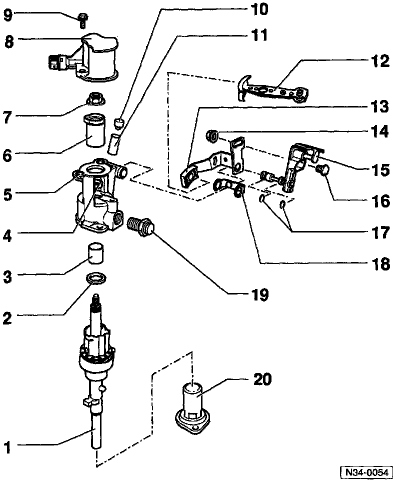
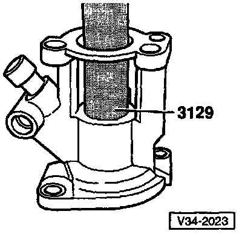

Shift Rail: Service and Repair

1 - Selector shaft
2 - Stop ring
3 - Ball sleeve

Removing Ball Sleeve From Selector Mechanism Cover
- Before removing ball bearing sleeve, destroy plastic cage and remove balls
- A = Internal puller, 18.6 - 23.5 mm e.g. US 1088 (Kukko 21/3)

Installing Ball Sleeve in Selector Mechanism Cover
4 - Oil seal for selector shaft
- Remove by prying out with screwdriver

Installing Oil Seal For Selector Shaft
- Press in to stop
5 - Cover
6 - Sleeve
- Tab faces Back-Up Light Switch
- Lightly lubricate tab with MoS2 grease
7 - Self-locking nut (always replace)
- Tightening torque: 25Nm (18 ft lb)
8 - Housing (with Back-Up Light Switch)
9 - Bolt
10 - Cap (for transmission breather)
11 - Sleeve
- Drive in to stop
12 - Transmission gearshift lever
- Install so that master spline aligns with selector shaft
- Can be replaced with selector mechanism installed

Replacing Transmission Gearshift Lever
- Press selector shaft (arrow 1) down
- Swivel gearshift lever (direction of arrow 2) and pull outward (direction of arrow 3), while guiding in area of balance weight bracket (arrow 4)
13 - Relay lever
14 - Nut
- Tightening torque: 15 Nm (11 ft lb)
15 - Actuating arm with shaft for mounting relay lever
16 - Bolt
- Press into actuating arm
17 - 0-rings
- Pull onto actuating arm shaft
18 - Spacer
- Press into relay lever
19 - Locking bolt
- Tightening torque: 4O Nm (3O ft lb)
20 - Cover